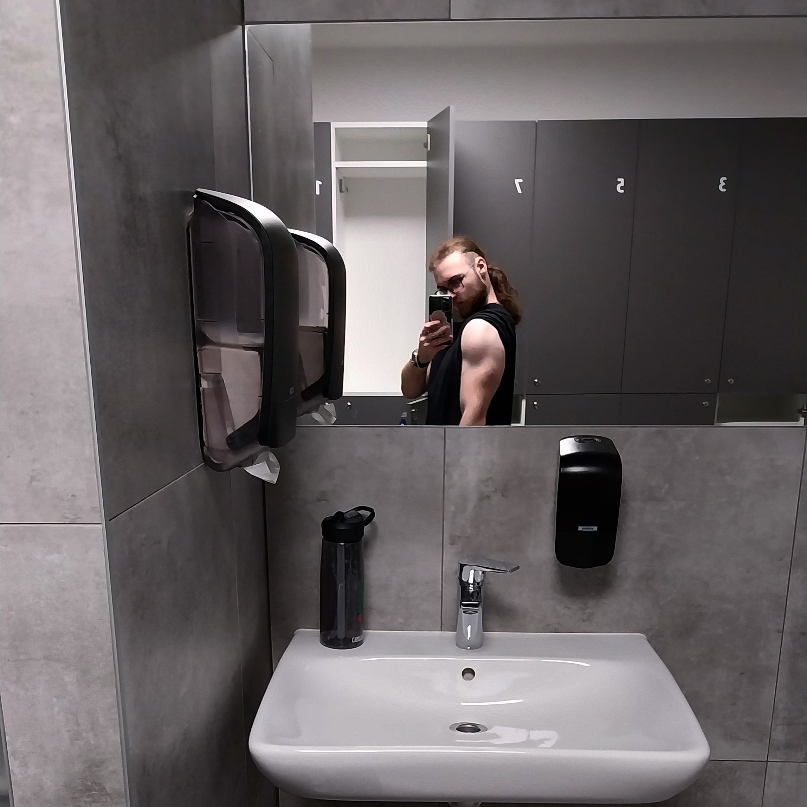
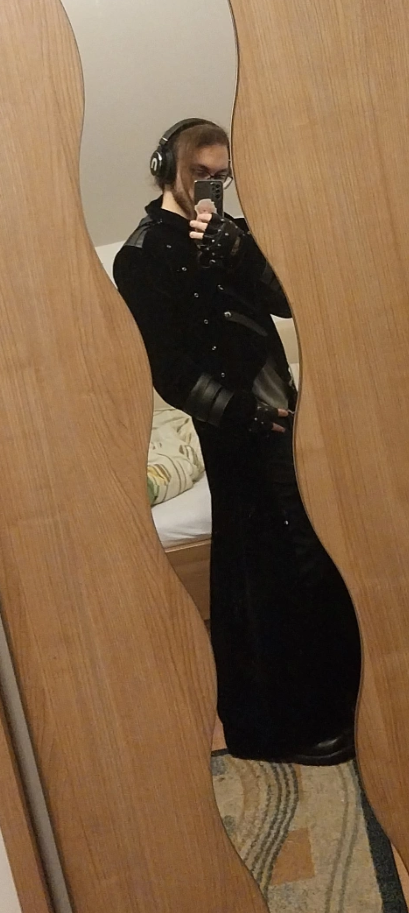

Me
Yo, Enjoy this longer description of me if you are interested.
So my name is Adrian Meriad im a young upcoming python coder born in a village near Žilina where im am currently located. I studied Mechanic of computer networks in Kysucké Nové Mesto where we learned a lot of about IT hardware, software, coding, databases etc etc. During the studies we were practicing with said hardware and other things, making few end of year projects and in the last year working in a company, i worked in Kia Slovakia located in Teplička nad Váhom, as a Helpdesk employee.
In my core im a loner/introvert, i prefer to not socialize a lot as it is quite draining on me and i find it boring if its not with my close friends. I wear a headphones a lot, like 90% of time im awake since i hate noisy places. But i do go out from time to time, meaning once a week of two.
Im known for my brutal honesty, i do not care if someone is in higher position if it would put me in danger as long as its calculated and i wont take a harsh words without dishing them out. Some find it problematic, some charming but in the end, i simply do not care. I do have a strong morality, i will not stand beeing used or abused as i will not for my friends or close ones. Same with my decisions and opinions unless challenged with proper arguments.
I suffer from bad immunity making me sick a lot arround a lot of people. So homeoffice is very much preffered for my health and productivity.
I dont have a driving license for cars as i dont intend on driving. But i plan on doing it for motorcycles.
Hobbies
Gym
Excercising goes a long way in my family giving me a great genetics for muscle development, with major acomplisment from my dad and brother. Father was a profesional hockey and bondey hockey player, winning a ton of medals and throphies. My brother was a proffesional football player while he was 15-20 jumping from club to club winning medals and throphies. So thanks to those 2 and others in my family-tree making me jealous and giving me a burning desire and drive to not only improve myself more but to win something for myself.
I dedicate a hour or two every working day to working out with a custom plan. I've been at it since 2022 but thanks to me going to school my progress was a lot slowed due to my not so great immune system as i was constantly getting heavely sick from the kids.
My main 3 exercises are currently at: 105kg bench press, 145kg squats and 200kg deadlift that after finishing managed to pass me out. And my suplements are whey protein, and creatine so im natural.
Repairing devices
As i was studing in hichschool, in a second grade i had enough knowledge of electronics and soldering to repair devices around my house and few devices for schoolmates.
This includes: mouses, radios, computers, graphics cards etc.
I find this a quite fun activy when done from time to time, if done constatly it gets on my nerves easely.
Videogames
Ever since i was young i feel in love with videogames. Dreaming of beeing a videogame developer i tried working on some but i was too inexpreciened with design coding etc. So i stayed just playing them and learning from them.
As i dedicate a quite a lot of time to them I'm quite skilled at them with my main game League of Legends where i placed at the TOP 10 in slovakia during my best year winning a lot of local comptetitions.
This hobby made me realize a lot of things in life, refining my personal skills for example in logic, leading a team, memorizing, learning and staying calm in a horribly stressfull situasions.
Coding
As a child dreaming of making games, i finally started coding. While in highschool i was tought about it and after finishing highschool i didnt feel like torturing myself with university and i rather started self learning on boot.dev and later on starting a recvalification course in python to make this my living. After the course is done, i finally plan on making a game.
Drawing
For some reason im talented in drawing using charcoal and pencils, i draw a bit here and there when i get inspired or i really want to. I was planing on going to artistic highschool but that would be a horrible decision to make as i didnt want this hobby to be anything then a hobby.
A few examples here, here and here.
Leisure activities
Music
Most of my music consists of gothic, post-punk or metal music. It makes me calm and helps me focus. From time to time i go out to concerts with friends.
Dressing up
As im a part of a Gothic comunity i love the music and the style, most of my wardrome consists of gothic and non-professional clothic. From time to time i wear gothic makeup.
Enjoy your reward for reading this.